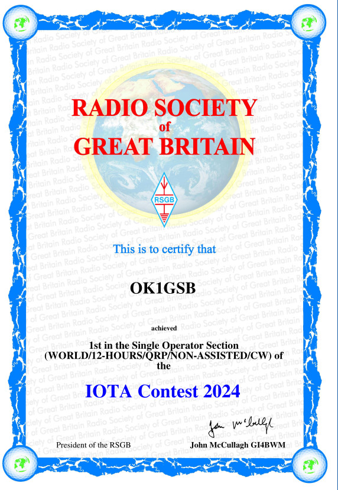

RSGB IOTA Contest 2024
After quite exhausting half a year I had finally some time to enjoy HF QP contesting, so I chose my favorite IOTA contest - it's nice to hear various islands around the Europe on the air. I chose quie minimal setting on the second QTH: IC-705 and two multiband verticals, one for 40/20m and second one for 15/10m which i put on fiberglass pole. CONDX were not great, but sporadic E did its thing, so there were lot of stations around Europe. I managed to "win" the 12h/NON-ASSISTED/CW category, not bad for 5W and just HM wire verticals.
CUAGN in IOTA contest!

